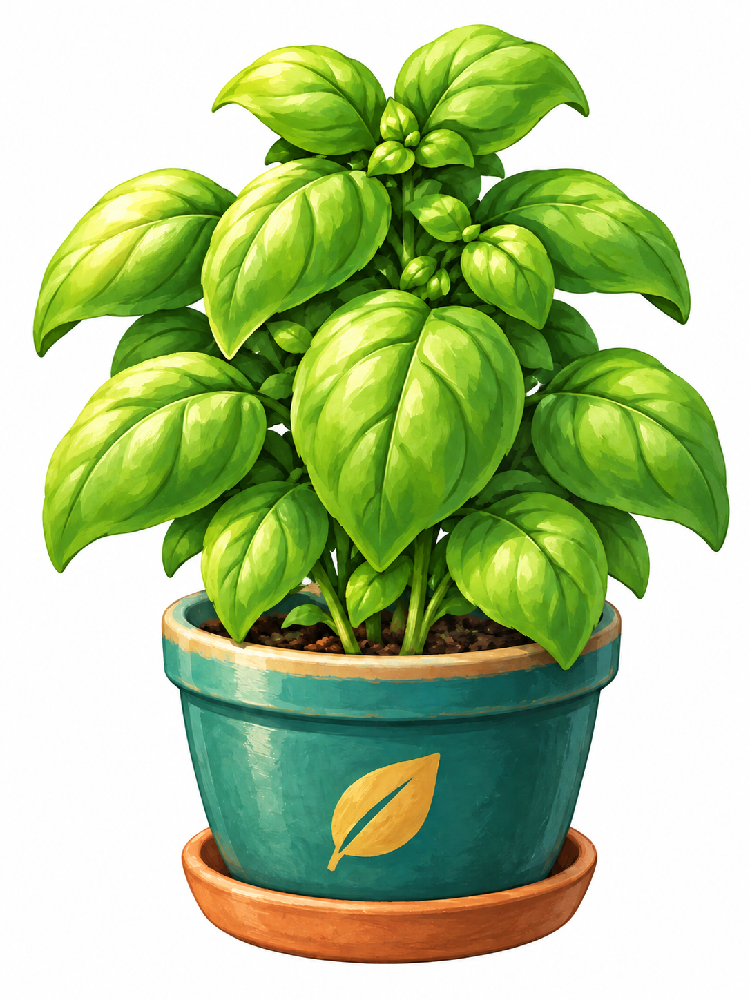

KVĚTINÁČ 01
Bazalka
Ocimum basilicum

Pěkně roste73 %
Mladá rostlinaDalší fáze: sklizeň
CHVILKA PÉČEMalá péče, velká radost.
Každý nový lístek začíná trochou péče.
KVĚTINÁČ 01
Ocimum basilicum

Každý nový lístek začíná trochou péče.